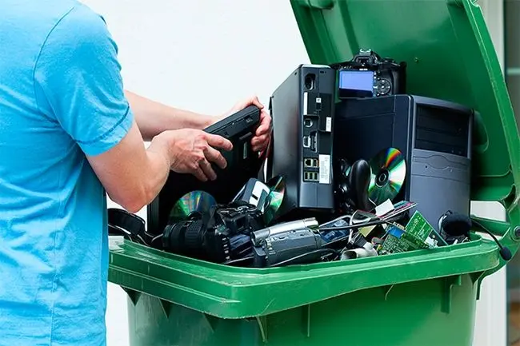
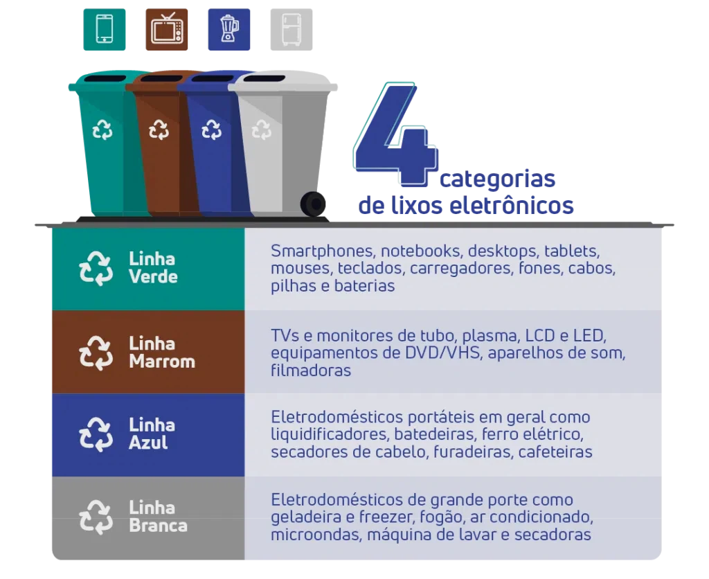

O lixo eletrônico, também chamado de REEE (Resíduos de Equipamentos Elétricos e Eletrônicos), ou resumidamente, e-lixo, é todo aparelho que funciona com energia elétrica ou pilhas e que foi descartado por não ter mais utilidade ou por estar quebrado.
Esse tipo de resíduo vem aumentando cada vez mais com o avanço da tecnologia, as pessoas querem substituir seus aparelhos por outros mais modernos, mesmo que os "antigos" ainda estejam funcionando, muitas vezes para acompanhar as tendências do momento. Desse modo, a reciclagem dos e-lixos assume grande relevância no cenário atual.
Para que a separação seja feita corretamente, o lixo eletrônico é classificado em quatro categorias, identificadas por cores:

Essas categorias, conhecidas como linhas, ajudam a classificar os diferentes tipos de equipamentos eletrônicos e eletrodomésticos, facilitando o processo de descarte adequado e a destinação correta para a reciclagem, reutilização ou tratamento seguro desses dispositivos, visando à redução do impacto ambiental e à promoção da sustentabilidade.